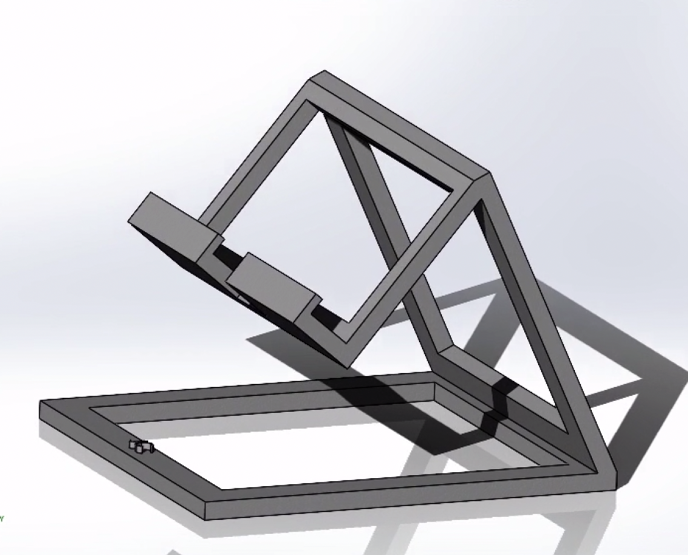
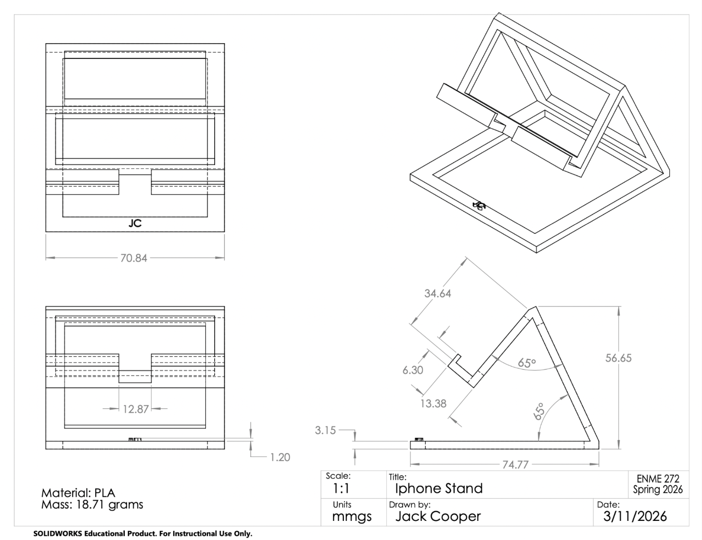

3D Printed Phone Stand
A small-scale project focused on the iterative process of modeling and printing a useable phone stand.
Overview
What this project was
This was a project to design and 3D print a phone stand as a way to practice the design process of going from a CAD model to a printed part to testing and refining.

CAD model

Engineering drawing
Design Process
From model to print
The design process started with modeling the stand in CAD, then 3D printing it to check its functionality in person. The goals when designing the CAD model were to make it as light as possible while still being able to hold my iPhone stably. Additionally, I wanted to accommodate charging my phone in both horizontal and vertical orientations.
Analysis
Evaluating structural performance
3D printing made it easy to test a design, see what didn't work, and adjust quickly. My first model worked, but I thought it was too heavy, so I decided to make a more optimized design. In my second iteration, I cut out material from the bottom and back, which lessened the mass but ultimately failed in reality as the supports were too thin. In my last model, I added back more material to the supports and ran an FEA analysis to determine if the stand would work with the weight of my phone on it. Since the yield strength of the PLA was greater than the maximum stress in the stand from the phone, I knew it wouldn't fail.

FEA analysis of final iteration
Final Design
The finished stand
The final stand achieved all of the goals I set out at the start of the project. The stand was light, compact, and strong enough to hold my phone and allow charging in either position.

Final print — in use
What I Learned
Takeaways
Even a small project like this reinforced how much design improves through fast and physical iteration. It's a lot easier to spot a flaw in a printed part than on a screen. This project was the first time that I engineered a tool that I could use in my everyday life. Although this project was technically difficult, I am still proud of my ability to design and iterate different ways to achieve the goals I set out at the start.